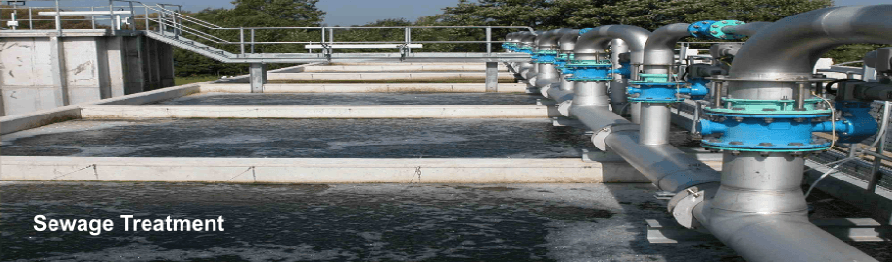
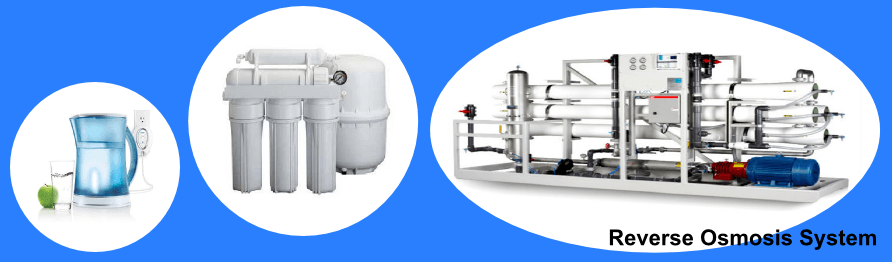
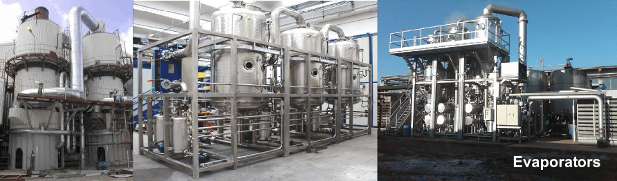
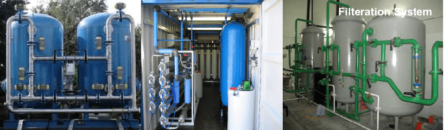
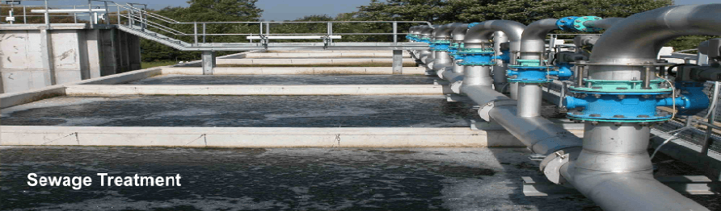
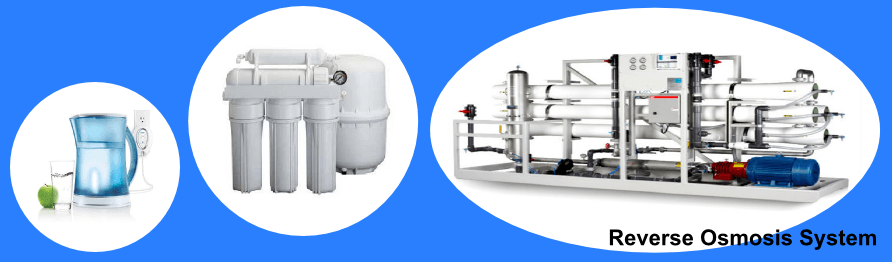
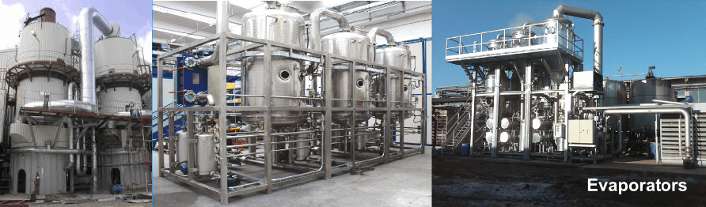
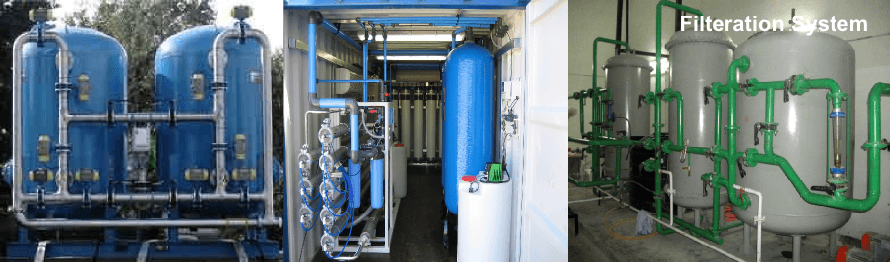

Effluent Treatment Plants
Effluent in the artificial sense is in general considered to be water pollution, such as the wastewater discharge from industrial facilities.

Our Effluent treatment Plants provide effective solutions to effluent odor control, BOD reduction, aeration, clarification, phosphorous and nitrogen removal and more. Our process experts work with the design team to learn the various factors that contribute to a plant’s design, including effluent requirements, land availability, energy, labor and disposal costs.
We then apply our extensive process knowledge and product expertise, analyzing the efficiency of each process, their interaction with other components, while optimizing the overall efficiency of the entire system from start to finish.
WPCs good practice guide deals with improving the performance of effluent treatment plant to reduce operating costs and reduce environmental pollution. Most companies operate effluent treatment plants to reduce the potential for pollution of receiving waters and to comply with discharge consent conditions. Effective management and control of the processes used for effluent treatment will help you to
- Reduce your operating costs and thus increase profits.
- Achieve more effective compliance with legislation.
- Improve your company's public image.
Need of ETP
- Water is basic necessity of life used for many purposes one of which is industrial use.
- Industries generally take water from rivers or lakes but they have to pay heavy taxes for that.
- So it’s necessary for them to recycle that to reduce cost and also conserve it.
- Main function of our ETP is to clean industry effluent and recycle it for further use.
We supply the effluent treatment plants for following industries:
- Metal finishing / Automobile / Steel mills / Electroplating
- Dying /Bleaching processes/tanneries/laundry-Textile Industry
- Acid-Alkali treatment- chemical industry/recovery of chemical
- Paper & pulp Industry, Leather Industry
- Oily waste water- automobile /refineries
- Pharmaceutical & food industry
- Thermal power / Rubber industry / Fertilizers